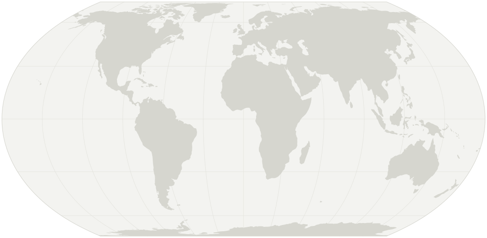

Team
We are driven by scientific curiosity, grounded in mutual respect, and made stronger by our diverse members.

Chase T. Gabbard
Principal Investigator
Incoming Assistant Professor
George W. Woodruff School of Mechanical Engineering
Georgia Institute of Technology
Chase leads the Gabbard Lab, managing its day-to-day operations and steering its long-term vision. He cherishes the opportunity to mentor students and strives to help them grow into leaders in science and technology.
Lab members
Profiles of lab members will appear here as the team grows. Want to be one of them?
See open positionsCollaborators
-
Joshua B. Bostwick
Professor of Mechanical Engineering
Clemson University
Clemson, South CarolinaBead-on-fiber flows and interfacial phenomena
-
Radu Cimpeanu
Associate Professor, Mathematics Institute
University of Warwick
Coventry, United KingdomDroplet rebound
-
Carlos A. Galeano-Rios
Assistant Professor
Minerva University
San Francisco, CaliforniaDroplet rebound
-
Daniel M. Harris
Associate Professor of Engineering
Brown University
Providence, Rhode IslandDroplet impact
-
John R. Saylor
Professor of Mechanical Engineering
Clemson University
Clemson, South CarolinaParticle scavenging via fiber-guided drops

- Bostwick, SaylorClemson University
- CimpeanuUniversity of Warwick
- Galeano-RiosMinerva University
- HarrisBrown University